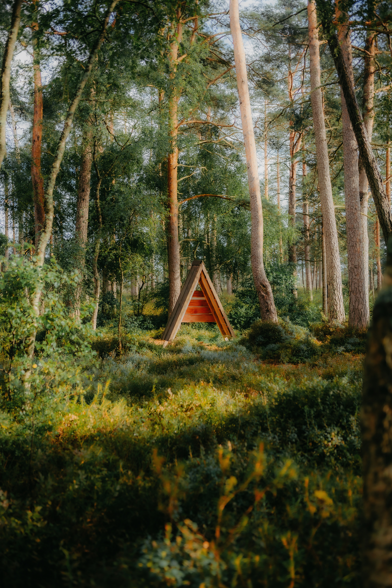

Why a ten-minute walk outside beats another coffee

Photo via Unsplash
The usual response to an afternoon slump is another coffee. It works, briefly, and then hands you a crash an hour or two later. A short walk outside tends to do more for actual focus, and it doesn't come with the same drop-off afterward.
- Step outside, even briefly Daylight and fresh air do more of the work than the walking itself. If ten minutes isn't possible, even three or four still helps — the goal is breaking the indoor, seated stretch, not hitting an exact number.
- Leave the phone in your pocket Scrolling during the walk defeats the purpose — it's still demanding the same kind of attention you're trying to rest. A walk with nothing to look at but the street or the trees gives your focus an actual break.
- Let your mind wander instead of solving anything Don't use the walk to mentally draft an email or rehearse a conversation. The reset comes from unfocused attention, not from swapping one task for a quieter version of the same kind of thinking.
- Come back and start with the smallest task Ease back in with something small rather than diving straight into the hardest item on your list. The walk resets focus; it doesn't erase the size of what's waiting.
Why this beats caffeine for an afternoon dip
Caffeine masks fatigue by blocking the signals that tell your brain it's tired — it doesn't actually resolve them, which is why the crash arrives once it wears off. A walk doesn't erase fatigue either, but it breaks the specific pattern that caused the slump: sitting still, staring at a screen, in the same visual field for hours. That break tends to hold longer than a caffeine spike does.
The goal isn't more energy. It's giving your attention something different to look at for ten minutes, so it comes back able to focus again.
Try it before reaching for the next cup
Next time the afternoon slump hits, take the walk first and see how you feel afterward. It costs nothing, and unlike coffee, there's no crash waiting on the other side of it.